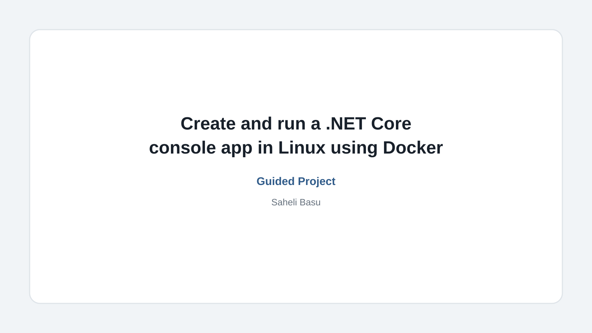
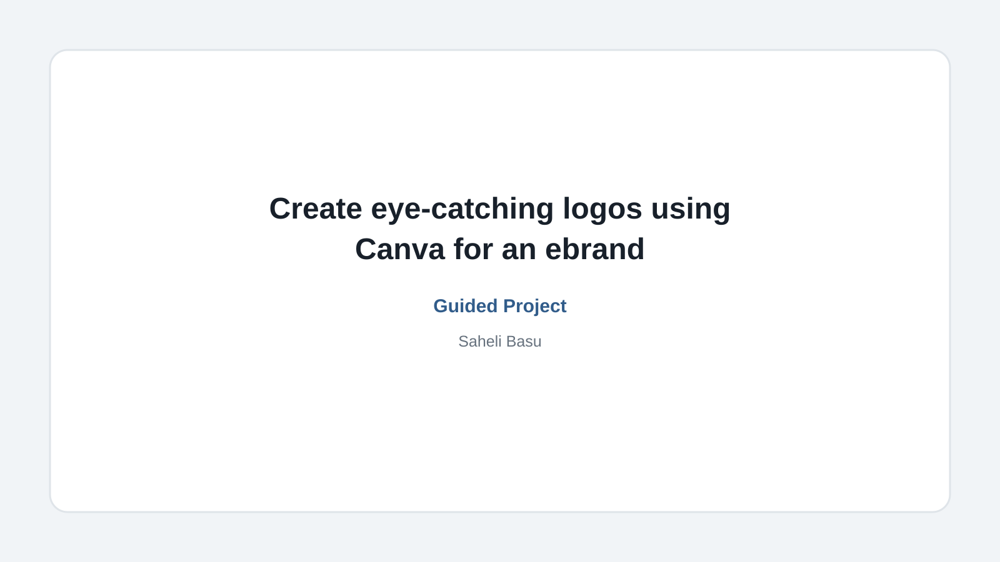
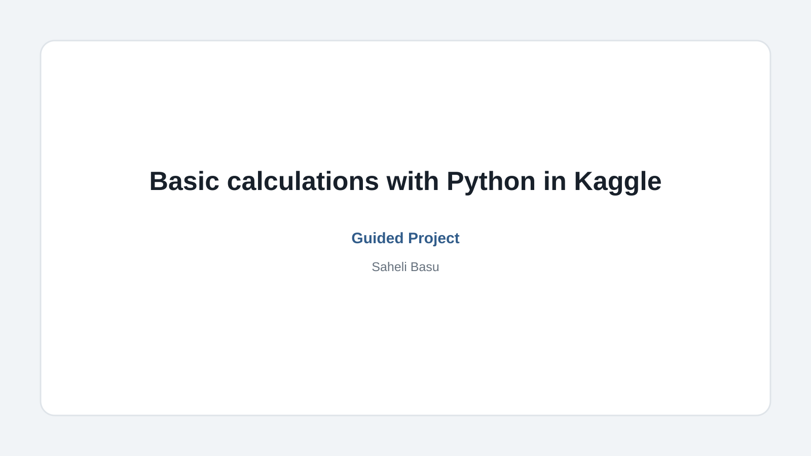
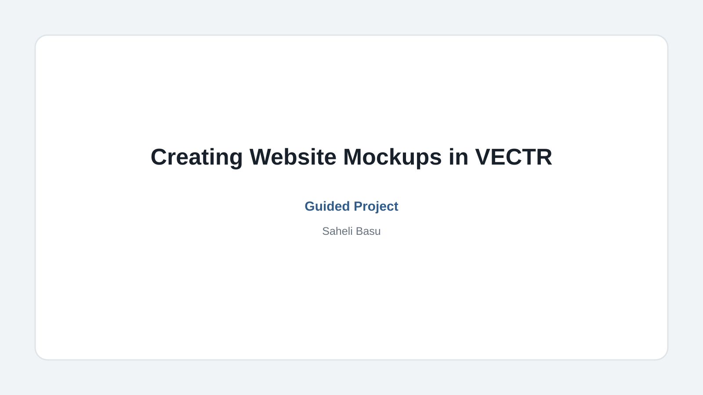
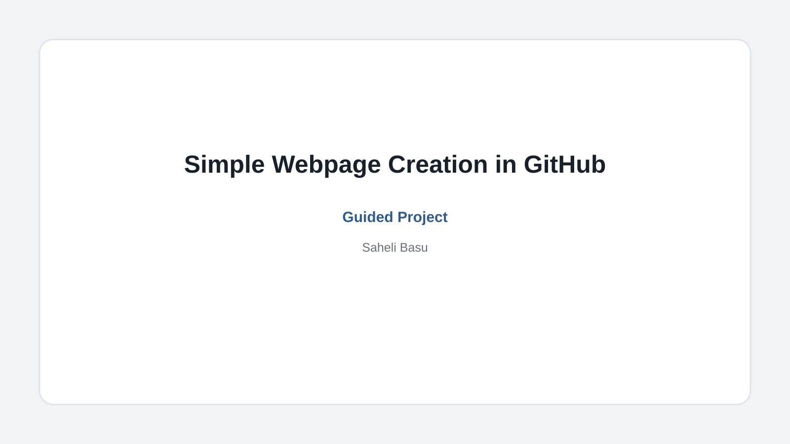
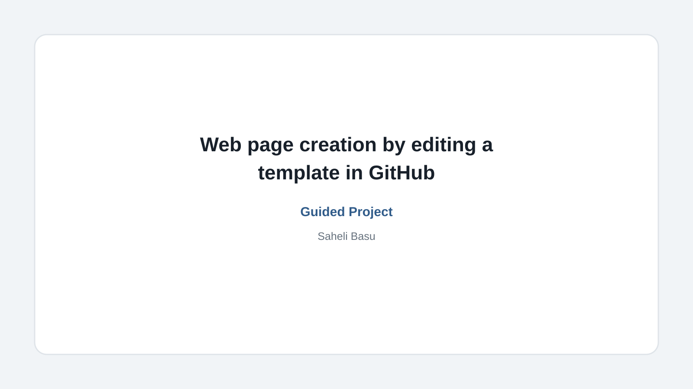
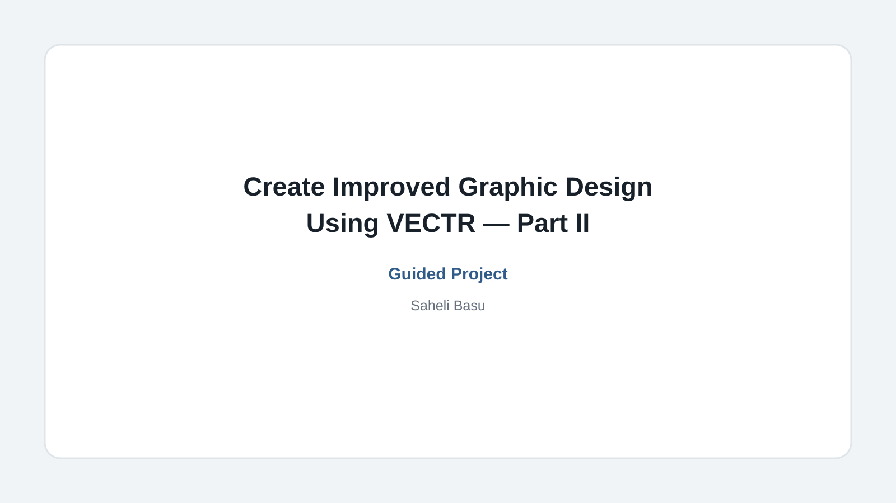
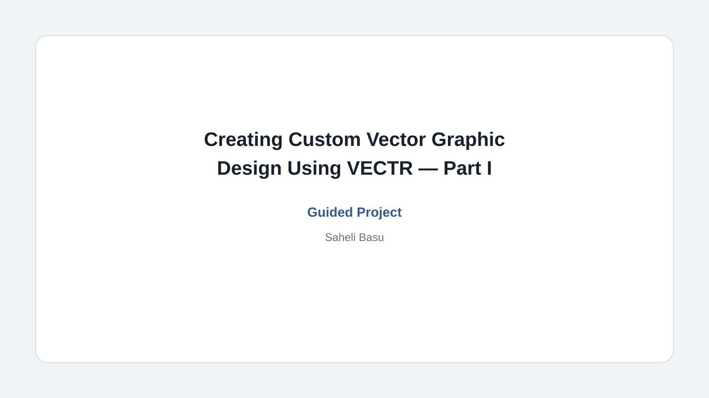
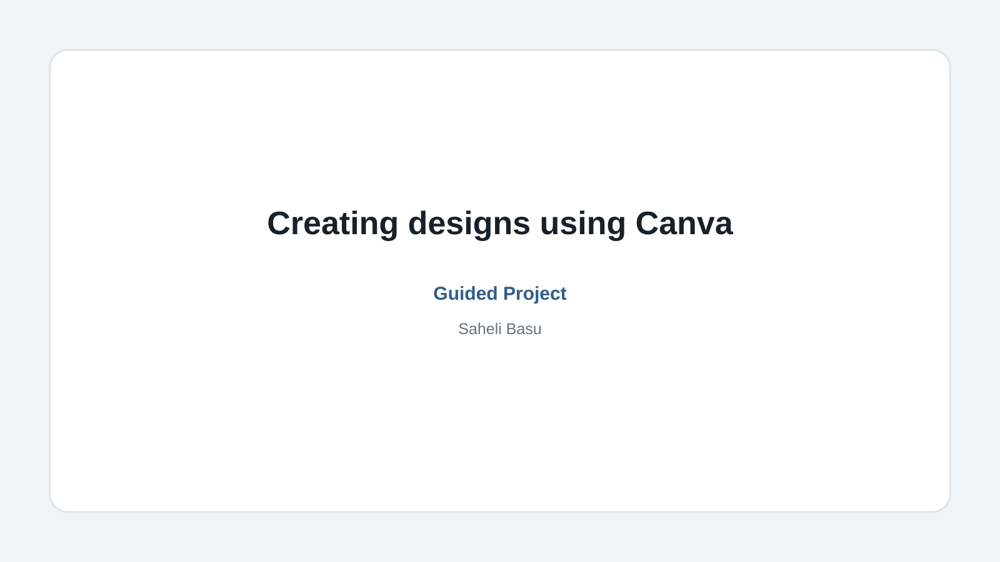
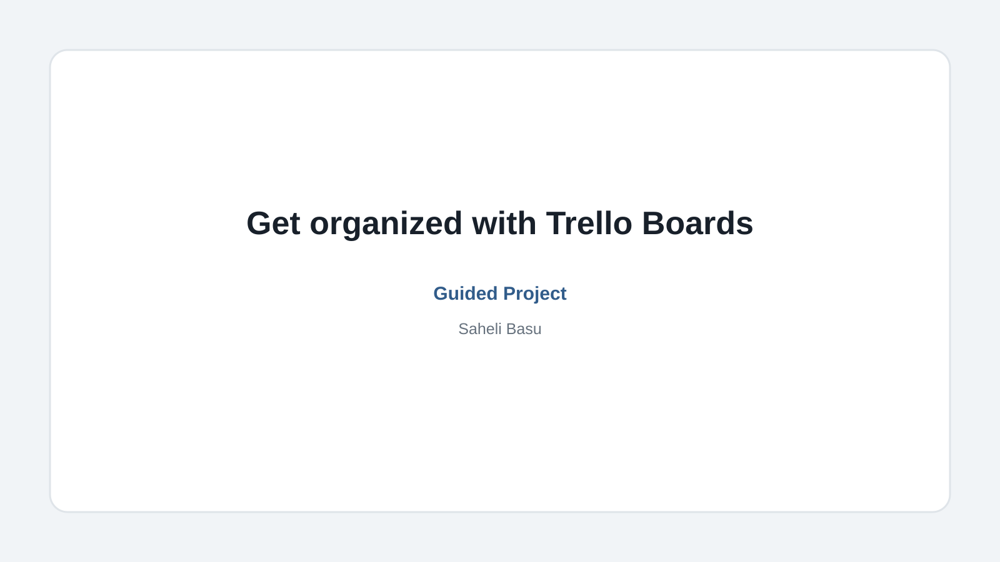

Coursera Guided Projects
Selected project-based learning work developed across Coursera's Guided Project ecosystem, including early community-led work and subsequent projects published through the Coursera Project Network.
Learning Design · Guided Projects · Selected Work
Selected learning-project work developed across Coursera's Guided Project ecosystem from 2020 onward. These projects reflect practical approaches to learner guidance, structured workflows, usability, and application-focused learning.
Selected project-based learning work developed across Coursera's Guided Project ecosystem, including early community-led work and subsequent projects published through the Coursera Project Network.
Developed from 2020 onward within Coursera's authoring environment, reflecting the production workflows and learner-experience conventions of the period.
Selected work · 2020 onward
A selection of project-based learning experiences covering web development, design, data, productivity, and practical digital workflows. Original platform availability varies; surviving third-party records are provided where available.

An application-development project focused on creating and running a .NET Core console application in a Linux environment using Docker.

A logo-design project using Canva to develop concepts from a project brief, explore branding elements, and prepare designs for practical use.

An introductory Python project using Kaggle to practice syntax, variables, numbers, functions, and basic mathematical calculations.

A practical VECTR project focused on creating website mockups, arranging variations, exporting designs, and sharing the resulting work.

A beginner project covering GitHub Pages, template editing, repository workflows, and basic HTML/CSS concepts for creating a simple webpage.

A practical website-building project using HTML/CSS and a GitHub template repository to create linked webpages and reusable website structures.

A continuation of the VECTR series focused on abstract backgrounds, flat character designs, visual balance, symmetry, and graphic refinement.

An introductory VECTR project covering custom graphic creation, editing, modification, implementation, exporting, and sharing.

A beginner-friendly Canva project covering workspace setup, logo and brochure design, media uploads, and exporting finished designs.

A practical Trello project covering board setup, workflow visualization with Kanban, team collaboration, and organization of professional or personal work.
Production context
Developed from 2020 onward within Coursera's authoring environment, reflecting the production workflows and learner-experience conventions of the period.
This page presents selected learning-project work for professional context. Retained materials and other appropriate evidence may be included where available, while historical third-party records provide context for projects whose original platform pages are no longer publicly accessible.
Professional inquiry